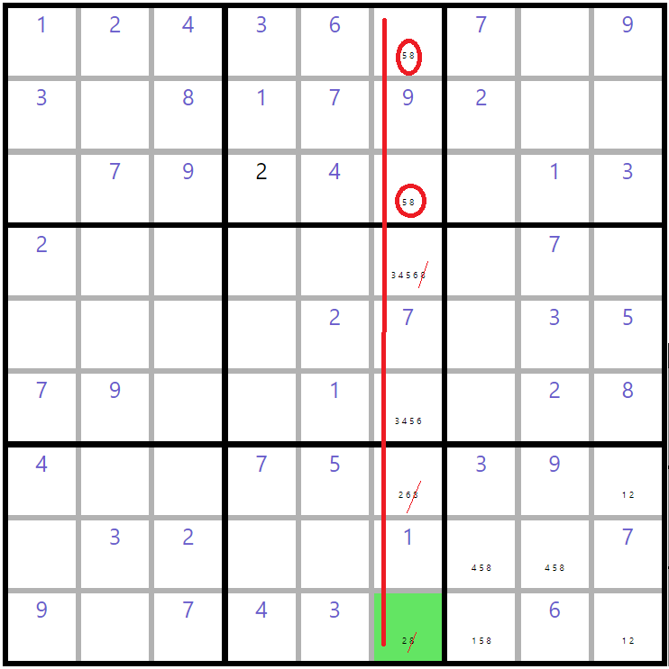
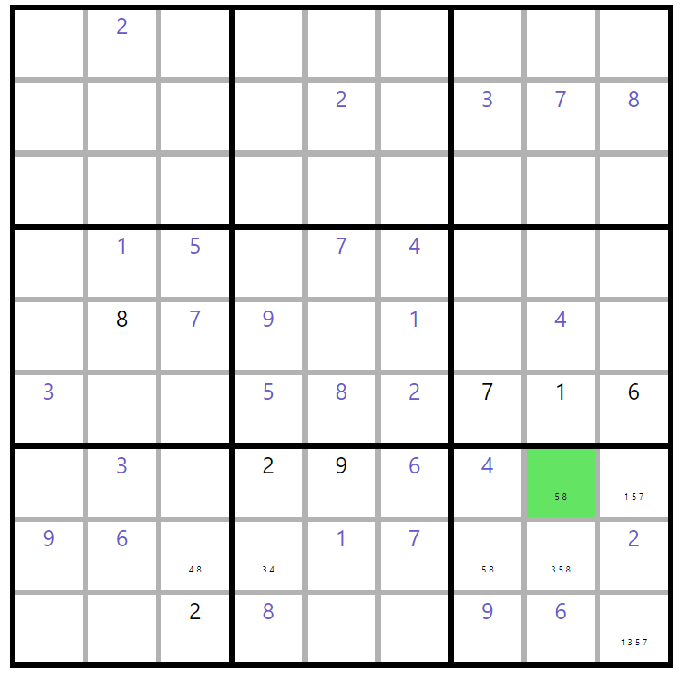
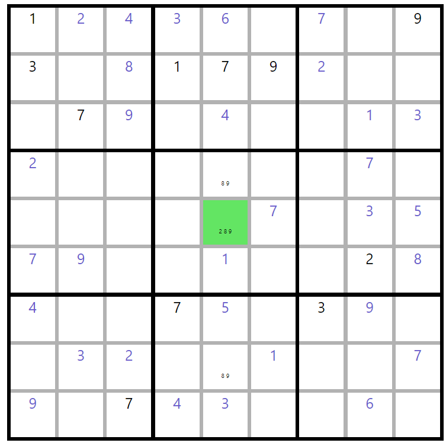
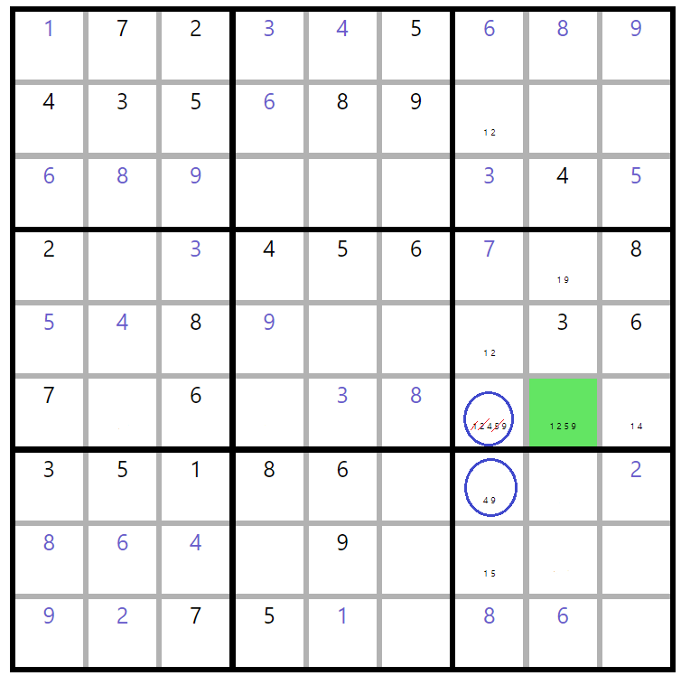

Sudou puzzles have a simple set of rules. The puzzle has 81 cells. In order to solve the puzzle, each
cell needs to be filled in with a digit 1-9. However, each row, each column and each box can only have
one of each digit.
Last-Remaining-Cell
The last-remaining-cell strategy comes into play when either a box, column or row has eight of its nine
values filled in
leaving only a single possible value for the remaining cell. The green cell in the above diagram can be
solved to the value
6 by using the last-remaining-cell strategy. This is because every other cell in its row already has every other
possible value. Only 6 is left and only this cell is left.
Sole Candidate
Using the sole candidate strategy we can solve the green cell in the above to a solution of 7.
This strategy entails looking at the values in the related box (6,3,1,8,4), column (1,4,5)
and row (2,6,3,9) and asking if there is a single value missing from the union of these three
sets. In the case of the green cell, 7 is the only value missing and so we can conclude the value
must be 7.
Unique Candidate Box
The unique candidate strategy lets us solve the green cell to the value 5. We simply pick a number to
look for, 5
in this example, and pick a box to check, the top right box here. We then look at all the columns and
rows that go
through that box and check to see if they have our target number in them. If so, we can dismiss all the
empty cells
in our target box that intersect these rows and columns from being possible spots for our target value.
In this
example we can widdle down the empty cells capable of holding the value 5 down to a single cell, by
discounting
those empty cells that intersect the two columns with fives.
Unique Candidate Row/Col
This is the same rule as the previous, but applied to rows and columns. Here we can solve the green cell
for 2 because every other empty cell in its column can't have a 2.
Pointing Pairs And Triples

Pointing pairs and triples has us searching by a possible value in a box that can only exist in two or
three
empty cells that happen to all be in the same row or column. This will allow us to deduce that that
value must
go into that row/column and hence can be removed from the possible value sets of every empty cell
outside that box that
share that row or column. In the above, we can solve the green cell for the value 2 using this strategy.
The top middle
box has only two cells for which the number 8 is a possible value. More over, both these cells happen to
be in the same
column. This means we can remove the number 8 from the possible value sets of every cell that is outside
this box
but inside this column. Removing 8 from all such cells leaves the green cell with only one
possible value, 2.
Note that we could also use this rule to remove 5 from the two empty cells that intersect this column
and the middle box
using this rule and the two top cells. Because of this, in this instance we could have also used the
naked subset rule described below. This is often not the case, however.
Box Line Reduction

Box line reduction asks if there is a missing value from a row or column that can only occur in one of its cells
that intersect a single box. If so we are able to remove that possible value from every other empty
cell in that box, because we know it must occur in one of the empty cells that overlap the row or column.
In the above, the green cell can be solved to the value 8 by removing 5 from its set of possible values with the
box line reduction strategy. If we inspect the row below the green cell, we can see that 5 is not a possible value
for any of its empty cells outside of the box with the green cell. However there are two cells in that row that
do have 5 as a possible value, in the same box as the green cell. This means one of those two cells must
have the value 5, and as such we can remove 5 as a possible value from the green cell, leaving its only possible
value as 8.
Naked Subset

We can use the naked subset rule to solve the green cell above to a value of 2. Like many sudoku
strategies,
naked subset rule entails our widdling down the possibilities for cells in the same row, column or box
(the same house). Naked subsets come into play when we have N number of cells in a
house
that have identical sets of possible values that are also of length N. To understand this, the column
the green cell
is located in has a total of three empty cells. Not only do the two other empty cells in the column have
the same set
of possible values, but the length of that identical set is two, the same number as the number of empty
cells that have
that set. This allows us to determine that the values of that set must be dispersed among those
two cells.
While this does not in itself allow us to determine which of these values belong to each of these two
cells, it does
allow us to remove them from the set of possible values for every other cell in the house. In
the above that means
we are able to remove 8 and 9 from the green cell, leaving 2 as its only possible value.
Hidden Subset

Hidden Subsets are very similar to naked subsets. One difference between hidden and naked subsets is that the
sets of possible values will, for at least one of the cells, be greater than the set of values that unites them.
For instance, we can find a hidden subset of length two between the two cells above that have their possible values
wrapped in a blue circle. These two cells are related by the same column. When we look at all
the possible places the numbers 4 and 9 can go in this column, we see that these two cells are the only two that
could possibly hold them. This means that we can remove every possible value in these two cells that is not 4 or
9. By removing 1, 2 and 5 from the top cell, we are able to solve the green cell to its right for the value 5, as
it becomes the only cell in the box that can hold 5.